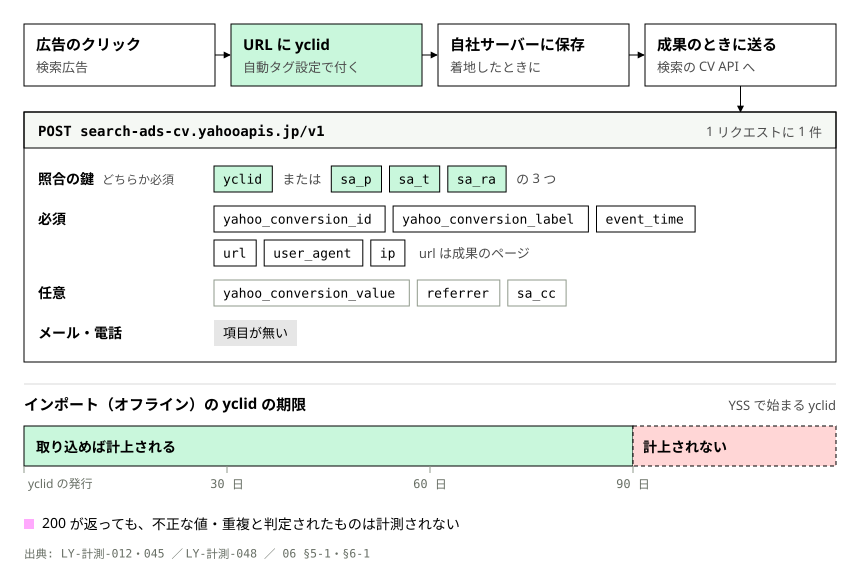

[ LINEヤフー / 06 ]
06計測とコンバージョン（タグ・自動タグ設定・コンバージョン API・インポート・推定コンバージョン）
位置づけ: 00_全体像.md §9 の各論。00 §9 が「地図」、この章は「成果を、どのタグと鍵で取り、どう数え、どう入札に渡すか」。Google の知識ベースでは ../Google広告の基礎/06_コンバージョン計測.md（以下 G06）と 24_計測の基盤.md（以下 G24）の 2 本に当たる。LINE 広告からの移行の話（LINE Tag の貼り替えなど）は 61_LINE広告との統合の状況.md §5 に任せ、ここでは重ねない
このメモについて
- 確認日: 2026-11-18（LINEヤフー広告ヘルプ〔ads-help.yahoo-net.jp〕の本文を Claude のアプリ内のブラウザで 20 ページ読んだ。公式 GitHub の検索広告コンバージョン API の文書を raw で取得、Developer Center の計測タグ・コンバージョン API の文書を WebFetch で取得、LINEヤフー for Business …
- 位置づけ:
00_全体像.md§9 の各論。00 §9 が「地図」、この章は「成果を、どのタグと鍵で取り、どう数え、どう入札に渡すか」。Google の知識ベースでは../Google広告の基礎/06_コンバージョン計測.md（以下 G06）と24_計測の基盤.md（以下 G24）の 2 本に当たる。LINE 広告からの移行の話（LINE Tag の貼り替えなど）は `61_L… - 使い方: 計測の設計（とくに検索とディスプレイの両方に出すとき）、計測が壊れたとき、数字が Google 広告や GA4 と合わないと言われたときに読む。確認日から 30 日を過ぎていたら出典を取り直す。この媒体は 2025〜2026 年に計測の仕組みを足し続けている（計測タグ、新しいコンバージョン API、推定コンバージョン、クリックのパラメーターの追加、レポートの終了）
- 凡例: ✓ 公式で確認 ／ △ 資料によって食い違う ／ ? 確認できず
- 主張の出どころの印: 公式LINEヤフーのヘルプ・お知らせ・公式コラム・開発者文書・公式 GitHub ／〔報道〕報道機関 ／〔第三者〕媒体外の解説 ／〔推測〕書き手の推測
地図
本文
0.先に結論（この章で一番効く 10 点）
- 01
検索広告の計測は今も「サイトジェネラルタグ＋コンバージョン測定タグ＋自動タグ設定（yclid）」が本線。 新しい「計測タグ」は 2026-04 時点で LINE 公式アカウント・ディスプレイ広告・検索広告（ショッピング）でしか使えず、通常の検索広告は対象外 ✓公式本文（B-06、S-17）
- 02
サイトジェネラルタグは検索とディスプレイで共通。1 ページに 1 つで両方動く。 別々に要るのは「コンバージョン測定タグ」のほう（検索用とディスプレイ用を 1 枚ずつ）✓公式本文（B-02、B-26）。初版 00 §9-1 の「ディスプレイ広告とは別に設置が要る」はサイトジェネラルタグについては言い過ぎ（§17）
- 03
検索広告の成果の照合の鍵は、すべて自動タグ設定が付けるクリックの ID。 タグの補完機能は yclid、コンバージョン API は yclid か sa_p・sa_t・sa_ra の 3 つ、オフラインのインポートは「YSS」で始まる yclid。sa_ 系のパラメーターも自動タグ設定が「設定する」のときにしか付かない ✓公式本文（B-03、B-09、B-21、B-38）。自動タグ設定を切っている、またはリダイレクトで ID が落ちる環境は、どの経路でも取り戻せない。メールアドレスなどで照合する仕組み（Google の拡張コンバージョンに当たるもの）は検索広告には見当たらない ?〔公式に記載なし〕
- 04
検索広告のコンバージョン API は「ブラウザーで取ったものをサーバーから送り直す」道具。 必須はクリック ID のほか、
url・user_agent・ip・event_time（クリックから計測期間内）・タグのyahoo_conversion_idとyahoo_conversion_label。1 リクエスト 1 件、50 リクエスト／秒、認証は User-Agent に入れるアプリケーション ID ✓公式本文（B-09） - 05
オフラインの成果はインポートで戻せるが、yclid は発行から 90 日で無効。 90 日を過ぎて取り込んだ分は計上されない。ファイルは CSV・Shift-JIS・20MB まで ✓公式本文（B-21）
- 06
推定コンバージョンがある。検索は 2025-10-22 から、ディスプレイは 2023-02-27 から「コンバージョン数」に合算され、抜き出しも除外もできない。 対象は検索ではウェブページのコンバージョンだけ、ディスプレイではクリック経由だけ ✓公式本文（B-12、B-13）
- 07
「自動入札への利用：しない」でも入札に使われる場合がある。 キャンペーン単位でコンバージョングループを指定すると、その中の設定は「しない」でも最適化に使われる（発生元と目的で指定した場合は設定どおり）✓公式本文（B-01、B-17）。「コンバージョン数」の列の中身も、キャンペーン単位の指定があればその設定だけになる
- 08
ディスプレイは計測タグ＋計測タグ用のコンバージョン API が本線で、メール・電話の「詳細マッチング」もある。 API は 1 リクエスト 1,000 件、約 500 件／秒、
event_timeはリクエストの 90 日前まで、action_sourceは web のみ。タグと API の重複は「アカウント ID＋transaction_id」で 7 日間除かれる ✓公式本文（B-28、B-29、B-07） - 09
ディスプレイの数字は列が 4 系統ある。 「コンバージョン数」（クリック＋10 秒以上の動画視聴の後）・「（クリック経由）」・「（全て）」・「ビュースルー」。ビュースルーは 24 時間固定でビューの日に計上、「コンバージョン数」には入らない ✓公式本文（B-24、B-08）
- 10
同意（Consent）を受け渡す項目は、タグにも API にも見当たらない。 公式が求めているのは「データを取得していること・マーケティングに使うこと・オプトアウトの方法」を、LINEヤフーの名前を出してサイトで説明すること（広告データ利用基準）✓公式本文（B-33、B-28、B-29）。同意の有無でタグを止める作りにするかは広告主の判断〔推測〕
1.Google との対比（G06・G24 との対比表）
- サイトジェネラルタグは検索・ディスプレイ共通、コンバージョン測定タグは別々
- どれも自動タグ設定（アカウント単位）が「設定する」のときだけ
- クリック ID 必須、ハッシュ化した個人情報の項目は無い
- グループに入れると「しない」でも入札に使われる
- ビュースルーは 24 時間固定
- きっかけのクリックの日（複数なら最後のクリックの日）
Google 側は G06・G24・15_細かいルール表の記述に合わせた。LINEヤフー側の印と出典は各節。
| 観点 | Google 広告（G06・G24） | LINEヤフー広告 | 運用の判断への効き方 |
|---|---|---|---|
| タグの数 | Google タグ 1 つに複数の送信先。イベント スニペットで成果を知らせる | 検索: サイトジェネラルタグ（全ページ）＋コンバージョン測定タグ（成果のページ）。ディスプレイ: 計測タグ（グローバルスニペット＋イベントスニペット）か従来版。サイトジェネラルタグは検索・ディスプレイ共通、コンバージョン測定タグは別々 | 検索とディスプレイを両方使うなら、全ページの土台は 1 つ、成果ページのタグは 2 つ以上になる（§12） |
| クリック ID | gclid（＋iOS 向けの gbraid・wbraid）。新規アカウントは自動タグ設定が既定で有効 | yclid（最大 300 文字）。2025-02-05 から sa_p・sa_cc・sa_t・sa_ra、2026-10-15 から _ly_c・_ly_r・_ly_src も付く。どれも自動タグ設定（アカウント単位）が「設定する」のときだけ | 検索とディスプレイのアカウントそれぞれで自動タグ設定を確かめる。既定値はヘルプに書かれていない ? |
| ファーストパーティ Cookie | コンバージョン リンカーが _gcl_aw などを 90 日置く | サイトジェネラルタグ＋補完機能タグが 1st party Cookie を作る。ローカルストレージのオプション（2024-09-05 から既存の設定も含め既定でチェック）で「一部の OS」の測定可能期間を 7 日まで延ばす。Cookie 名と保存期間の一覧は ? | Safari などで翌日以降の成果が落ちる構造は Google と同じ〔推測〕。ローカルストレージの版のタグに貼り替えたかを点検する |
| サーバーからの送信 | 拡張コンバージョン（ハッシュ化したメール等で照合）、オフライン取り込み、Data Manager | 検索: コンバージョン API（クリック ID 必須、ハッシュ化した個人情報の項目は無い）。ディスプレイ: 計測タグ用のコンバージョン API（ハッシュ化したメール・電話、Cookie の ID、広告識別子、LINE のユーザー ID） | 検索で「Cookie が消えた分をメールで取り戻す」はできない。検索の API の価値は、ブラウザーのタグが止まる場面（広告ブロッカー等）の保険に限られる〔推測〕 |
| オフライン | gclid でクリックから 90 日、個人データ付きは 63 日。リードの拡張コンバージョンが推奨 | 検索: yclid（YSS…）で発行から 90 日。テンプレートの CSV を広告管理ツールで取り込む（キャンペーンエディターでは不可）。ディスプレイにもインポートの流れのヘルプがある | 期限は同じ 90 日。Google の「ハッシュ化データで結ぶ」道は検索には無い |
| 推定の補完 | 推定コンバージョンを「コンバージョン」列に含める。同意モードのモデル化 | 推定コンバージョン（検索 2025-10-22〜、ディスプレイ 2023-02-27〜）を合算。抜き出し・除外は不可 | 2025-10-22 の前後で検索のコンバージョン数を比べるときは、推定の合算が始まったことを注記する |
| 入札に使う成果 | メイン／サブ。カスタム目標・キャンペーン固有の目標 | 検索: 設定ごとの「自動入札への利用：する／しない」＋キャンペーン単位の「発生元と目的」か「コンバージョングループ」（2024-10-23〜）。ディスプレイ: 「コンバージョン列に含める」＋キャンペーンの「最適化に使用するコンバージョン」 | 考え方は Google の「アカウントの既定」と「キャンペーン固有」に近い〔推測〕。グループに入れると「しない」でも入札に使われる点が Google のカスタム目標（サブでも入札に使う）とよく似ている |
| 列の名前 | 「コンバージョン」「すべてのコンバージョン」 | 「コンバージョン数」「コンバージョン数（全て）」。ディスプレイは「（クリック経由）」「ビュースルー」「クロスデバイス」も | 成果の比較は「（全て）」で、と公式は書く（検索・ディスプレイとも） |
| 計測期間 | クリックから 1〜90 日（既定 30 日）。ビュースルー 1〜30 日（既定 1 日） | クリックから 1〜90 日（7 日以上を推奨。既定値は ?）。ディスプレイの動画視聴から 1〜30 日。ビュースルーは 24 時間固定 | ビュースルーの期間を Google と揃えて比べることはできない |
| カウント | 発生元による。購入は全件、リードは初回のみが向く | 「毎回」と「初回のみ」。管理画面の初期値は「毎回」、API で追加したときの既定は ONE_PER_CLICK（ユニーク）△ | API やツールで一括作成した設定は「初回のみ」になっている可能性がある。購入を全件数えたいなら作成後に確かめる |
| 計上日 | クリック日 | きっかけのクリックの日（複数なら最後のクリックの日）。ビュースルーはビューの日 | Google と同じく直近の日の数字は後から増える |
| アトリビューション | データドリブンかラストクリック | モデルを選ぶ設定は見当たらない ?。ディスプレイには「アトリビューションモデル比較レポート」があったが 2027-01-13 に終了予定 | 媒体の数字は「その媒体のクリックに最後に結んだ数」として読む〔推測〕 |
| 同意 | 同意モード v2（ad_storage・ad_user_data など） | タグ・API に同意の項目は見当たらない ?。広告データ利用基準でサイト上の説明とオプトアウトの導線を求める | Google の同意モードの設計をそのまま当てはめる受け皿は無い。CMP でタグの発火を止めるかどうかは広告主が決める〔推測〕 |
| データの保持 | — | 検索の管理画面とレポートは抽出日から 37 か月前まで（2026-07-29〜）✓ S-35 | 3 年を超える比較は自前で保存 |
| 同じ言葉で意味が違うもの | 「コンバージョン」列＝メインの成果 | 「コンバージョン数」＝自動入札に使う設定（またはキャンペーンで選んだ設定）の成果＋推定。ディスプレイでは動画視聴後の成果も含みビュースルーは含まない | 媒体横断の表では「入札に使う成果の列」をそろえて並べる |
| Google に無い仕組み | — | 電話発信コンバージョン（電話リンクのタップを数える。発信したかは問わない）、目的「有望な見込み客」「取引歴のある見込み客」（インポート専用）、計測タグの isExternalTransmission（パートナー企業への送信の可否） | 電話の成果は「タップ数」なので、Google の通話コンバージョン（通話時間の条件付き）と同じ物差しで比べない〔推測〕 |
2.全体の地図（どのサービスで、どのタグと鍵を使うか）

タグを入れるとき、サイトジェネラルタグは 1 つで足りるが、成果のタグ・自動タグ設定・サーバー連携は検索とディスプレイで 1 組ずつ要る。アカウントが別なので、媒体全体の成績は 2 つのレポートを足して作る。
出典: LY-アカウント-001・LY-計測-034・LY-計測-037 ほか 9 件 · 2026-11-18 時点
- 計測タグ
- 通常の検索広告が計測タグに対応する日付は出ていない
表で見る（6 行。上の図のもとの表）
| 検索広告 | ディスプレイ広告 | 検索広告（ショッピング） | |
|---|---|---|---|
| ブラウザーのタグ | サイトジェネラルタグ（＋補完機能タグ）＋コンバージョン測定タグ。電話はオンクリックイベントタグも ✓ 本文（B-02、B-37） | 計測タグ（推奨）か、従来版（サイトジェネラルタグ＋コンバージョン測定タグ） ✓ 本文（B-06、B-02） | 計測タグ（2026-08-26〜）。従来版の新規作成は 2026-10-06 に終了 ✓公式S-50、S-51 |
| 照合の鍵 | yclid（タグ）、yclid か sa_p・sa_t・sa_ra（API）、YSS で始まる yclid（インポート） ✓ 本文（B-03、B-09、B-21） | _ly_c（計測タグ）、yclid（従来版タグ）、メール・電話（詳細マッチング）、_ly_su・_ly_r・広告識別子・LINE のユーザー ID（API） ✓ 本文（B-04、B-07、B-28） | 計測タグと同じ（メールは未対応の項目あり）✓ 本文（B-29） |
| サーバー送信 | 検索広告のコンバージョン API（search-ads-cv.yahooapis.jp） ✓ 本文（B-09） | 計測タグ用のコンバージョン API（conversion-api.yahooapis.jp）。従来版のコンバージョン API も「引き続き利用可」 ✓ 本文（B-28、B-36） | 計測タグ用の API ✓公式S-50 |
| オフライン | インポート（CSV） ✓ 本文（B-19〜B-21） | インポートの流れのヘルプあり（中身は未読）✓ 本文（B-20 のリンク）／詳細 ? | ? |
| 推定の補完 | 推定コンバージョン（2025-10-22〜、ウェブページのみ） | 推定コンバージョン（2023-02-27〜、クリック経由のみ） ✓ 本文（B-13） | ? |
| タグの管理場所 | 広告管理ツールの「ツール」→「ライブラリー」→「コンバージョン測定」 | 計測タグはビジネスマネージャー（推奨）か広告管理ツールの「ツール」→「権限・データ」→「計測タグ」 ✓ 本文（B-25） | ディスプレイと同じ |
- 計測タグについて Developer Center は「利用できる LINEヤフーのサービスは今後もさらに拡大予定」と書くが、時期は書いていない ✓公式本文（B-44）。検索広告の自動タグ設定で 2026-10-15 から
_ly_cなどが付き始めたのは「今後の機能拡充の事前準備」と公式は書く ✓公式本文（B-32）。通常の検索広告が計測タグに対応する日付は出ていない ?
運用の判断への効き方:
- 2026-11 時点で「1 つのタグで LINEヤフー広告を全部まかなう」形にはまだならない。検索に出すなら従来版の作法を省けない〔推測〕（根拠は B-06 の対象サービスの一覧）
- 計測タグへの移行の準備は、検索広告に対応したときに慌てないよう、ディスプレイ側で先に済ませておく価値がある〔推測〕
3.検索広告のタグと自動タグ設定
- 自動タグ設定が「設定する」でないと働かない
- 必ず A と組
- 実際に発信したかどうかは関係なく計上される
- 実際の URL に何が付くかは、クリックして確かめる
- 自動タグ設定を「設定しない」にする理由はほぼ無い
3-1.タグの組み合わせ ✓公式本文（B-02、B-26、B-01）
| タグ | 役割 | 置く場所 |
|---|---|---|
| サイトジェネラルタグ（A） | ① 1st party Cookie を作る（補完機能タグと一緒に使うとき）② ほかのタグ（コンバージョン測定タグ・サイトリターゲティングタグ・補完機能タグ）をまとめて実行する | 全ページの <head> 開始直後。ページ数が多ければ成果のページと LP だけでも可 |
| コンバージョン測定補完機能タグ（B） | ブラウザーのセキュリティ強化の影響を受けにくくする。自動タグ設定が「設定する」でないと働かない | A と一体のコードで配られる（「サイトジェネラルタグとコンバージョン測定補完機能タグを設置する」を選んで表示されるタグ）。A だけ貼ってある所に B だけを足すことはできず、A＋B に貼り替える |
| コンバージョン測定タグ（C） | 成果を知らせる | 成果のページ。A（A＋B）より後（<body> 内も可）か、成果の操作のタイミング |
| サイトリターゲティングタグ（D） | リターゲティング用 | A と組で |
| オンクリックイベントタグ | 電話リンクのタップを成果として知らせる（yahoo_report_conversion('tel:…')） | 電話リンクのある場所。C と同じページ |
- 組で置く決まり: A＋B、A＋C、A＋D のように必ず A と組。全部置くなら A→B→C→D の順。A が無いとほかのタグは動かない。A が複数あっても問題なく動く。検索とディスプレイの両方のコンバージョン測定タグを置くときの順は問わない ✓ 本文（B-26）
- サイトジェネラルタグと補完機能タグは「検索広告、ディスプレイ広告の両方を利用している場合でも、1 ページにつきいずれか 1 つ設置すれば動作」。コンバージョン測定タグは検索・ディスプレイごとに要る ✓ 本文（B-02）
- サイトジェネラルタグと補完機能タグは「アカウント内で共通」 ✓ 本文（B-01）
- ローカルストレージのオプション: Cookie とは別のブラウザーの保存領域を使い、「一部の OS」のコンバージョン測定可能期間を 7 日まで延ばす。検索・ショッピングでは 2024-09-05、ディスプレイでは 2024-08-28 から、既存を含むすべてのコンバージョン設定でオプションにチェックが入った状態になり、表示されるタグが一部変わった ✓ 本文（B-03）。「一部の OS」がどれかは書かれていない ?
- クロスドメイン: コンバージョン測定タグのあるページと同じドメインのページに A＋B を置き、そこまで yclid を引き継ぐ ✓ 本文（B-03）
3-2.電話発信コンバージョン ✓公式本文（B-37）
- 数えるのは「電話発信用リンクのタップかクリック」。実際に発信したかどうかは関係なく計上されるため、スマートフォンに優先して出す設定を公式が勧める
- JavaScript を使わないページでは測れない。同じページに電話発信のコンバージョン測定タグは 1 つまで。複数の電話リンクにオンクリックを付けると合算
- 他社の電話計測と同じリンクで併用するときは onclick を並べて書き、電話番号はどちらか一方にだけ書く（両方に書くと 2 回発信しうる）。併用の動作は保証されない
3-3.自動タグ設定 ✓公式本文（B-04、B-03、B-32、B-38）
| 項目 | 中身 |
|---|---|
| 単位 | 広告アカウント単位。検索とディスプレイのアカウントそれぞれで「設定する」になっているか確かめる |
| 付くもの | ヘルプ（B-04）の説明: クリック後に最初に遷移する URL に yclid と _ly_c の 2 つのクリック ID。コンバージョン測定タグは yclid、計測タグは _ly_c で照合 |
| 2025-02-05〜 | 検索広告で sa_p・sa_cc・sa_t・sa_ra（2〜10 文字）。条件は自動タグ設定＋サイトジェネラルタグ等の設置。遷移先の 1st party Cookie に _ycla_aw（約 50 文字）。公式は「配信・成果への影響なし」 |
| 2026-10-15〜 | 検索広告で _ly_c・_ly_r・_ly_src（2〜36 文字）。遷移先に計測タグのグローバルスニペットがあれば 1st party Cookie に _ly_c・_ly_r・_ly_src・_ly_su（約 110 文字） |
| 位置 | # の前に入る（例: ?a=bbb&yclid=xxx#ccc） |
| 長さ | yclid は最大 300 文字 |
| 注意 | 任意のパラメーターを許さないサイトではエラーページになりうる。他社のトラッキングツールでリダイレクトすると yclid が LP のアドレスバーに残らないことがある。広告管理ツールではパラメーター付きの URL は見られないので、実際にクリックして確かめるよう公式は勧める |
| ディスプレイ固有 | 連携済みの広告効果測定ツールを使うときは _p_c も付く。トラッキング URL に {lpurl} が無いときはトラッキング URL 側に付く。アカウント作成時の国が「日本」以外なら自動タグ設定は使えない（補完もできない） |
| 任意の名前で受け取る | トラッキング用パラメーター {yclid} で任意の項目名に入れられる |
- △ 自動タグ設定のヘルプ（B-04）は「yclid と _ly_c の 2 つ」と書き、2026-10-23 のお知らせ（B-32）は検索広告に
_ly_c・_ly_r・_ly_srcの 3 つが加わったと書く。sa_ 系はヘルプに出てこない。実際の URL に何が付くかは、クリックして確かめるのが確実
運用の判断への効き方:
- 自動タグ設定を「設定しない」にする理由はほぼ無い。 検索広告のタグの補完機能・コンバージョン API・オフラインのインポートが、すべて自動タグ設定の付ける ID に頼っている（§5・§6）〔推測〕
- LP のサーバーやフォームが未知のパラメーターを捨てる・弾く作りなら、公開前に
yclid・sa_・_ly_で始まる値を通す設定にする。長さ（yclid は 300 文字まで）も確かめる - リダイレクトをはさむ計測ツールを使うなら、着地の URL に yclid が残るかを実機で見る。残らないなら検索広告の成果は補完機能でも API でも戻せない
3-4.細かいルール一覧（検索のタグと自動タグ設定）
| 項目 | できる／できない・上限 | 出典 |
|---|---|---|
| サイトジェネラルタグの数 | 1 ページに 1 つで検索・ディスプレイ両方が動く。複数あっても動く | B-02、B-26 |
| コンバージョン測定タグ | 検索用・ディスプレイ用を別々に置く | B-02 |
| 補完機能タグだけの追加 | できない（A＋B に貼り替える） | B-03 |
| 補完機能 | 自動タグ設定が「設定する」のときだけ働く | B-02、B-03 |
| 電話発信のタグ | 同じページに 1 つまで。JavaScript 不可のページでは測れない | B-37 |
| yclid の長さ | 最大 300 文字 | B-04 |
| 自動タグ設定（ディスプレイ） | 国が日本以外のアカウントは使えない | B-04 |
4.検索広告のコンバージョン設定と数字の列
- Google Play のアプリだけで、iOS アプリは測れない
- 有望な見込み客・取引歴のある見込み客（インポートだけ）
- 7 日以上を推奨
- 「しない」にした設定は使われない
- 「しない」の設定でも使われる
- きっかけのクリックの日（複数なら最後のクリックの日）
4-1.設定の項目 ✓公式本文（B-01、B-19、B-37、B-18、B-23）
| 項目 | 中身 |
|---|---|
| 種別 | ウェブページ・電話発信・アプリ・インポート（API ではほかに APP_LINK_CONVERSION）。アプリは Google Play のアプリだけで、iOS アプリは測れない |
| 上限 | 全種別あわせて 1 アカウント 1,000 件 |
| 名前 | 100 文字以内、アカウント内で重複不可 |
| 目的（コンバージョン測定の目的） | 購入／販売、定期購入、お申し込み、見込み客のフォーム送信、予約、見積もりのリクエスト、ルート・乗換案内、離脱クリック、連絡先、主要なページの閲覧、カートに追加、決済の開始、架電、タグの発火、有望な見込み客・取引歴のある見込み客（インポートだけ）、ダウンロード（アプリ）、その他。「実店舗に来店」「実店舗で購入」は 2022-08-19 から選べない |
| 計測期間 | クリックから 1〜90 日。7 日以上を推奨（短いと大きく減りうる）。高額商材は 90 日の例 |
| 計測方法 | 「毎回」（そのブラウザーで期間内の成果を毎回）と「初回のみ」（最初の 1 回だけ）。管理画面の初期値は「毎回」（B-22）。2016-11-24 より前の数字は「毎回」で計測されたもの |
| 自動入札への利用 | 「する」「しない」。目的は「自動入札でコンバージョン数から特定の成果を除外すること」。CV を使う 4 つの入札戦略（コンバージョン数の最大化・価値の最大化・単価の目標値・費用対効果の目標値）では 1 つ以上を「する」に。全部「しない」だと成果が伸びない・配信されない可能性 |
| 1 コンバージョンあたりの価値 | 半角数字 13 文字以内。未入力は 0 円。タグを書き換えれば動的に取れる |
| 発生元 | 「ウェブサイト」「アプリ」「電話」をシステムが自動で判定（2024-10-23 追加） |
| 権限 | 設定の変更は管理権限・登録更新権限のユーザーだけ |
| クロスデバイス | ウェブページのヘルプは「2018-09-12 以降、すべてのコンバージョン測定でデバイスをまたいだ成果を測定」、電話発信のヘルプは「2018-07-05 以降に新規設定したもの」と書く △（B-01、B-37） |
- △ 計測方法の既定値: 管理画面のヘルプは初期値「毎回」（B-22）、API（v20）の
ConversionTrackerServiceConversionCountingTypeは「ADD 時のデフォルトは ONE_PER_CLICK（ユニーク）」（B-40）。作り方で既定が違う
4-2.入札に使う成果の選び方（2024-10-23〜）✓公式本文（B-17、B-01）
| やり方 | 何が入札に使われるか | 「コンバージョン数」の列 |
|---|---|---|
| キャンペーン単位の指定なし（従来） | 「自動入札への利用：する」の設定すべて | 「する」の設定の成果だけ（「しない」は「（全て）」だけに入る） |
| キャンペーン単位で「発生元と目的」を指定 | 条件に合う設定。「しない」にした設定は使われない | 選んだ設定の数値だけ |
| キャンペーン単位で「コンバージョングループ」を指定 | グループに入れた設定。「しない」の設定でも使われる | 選んだ設定の数値だけ |
- 公式の注意: 使う成果を絞ると最適化に使える件数が減り、学習が想定より進まないことがある。継続して一定の件数が見込めるキャンペーンで使う ✓ 本文（B-17）
- API ではキャンペーンの
conversionSetting/campaignConversionGoals[]に発生元（source）と目的（category）の組を入れる。設定に無い組み合わせはエラー I0001 ✓公式本文（B-40 の同じ OpenAPI）
4-3.列の読み方 ✓公式本文（B-22）
| 列 | 中身 |
|---|---|
| コンバージョン数 | 入札に使う成果（§4-2）。ウェブページは推定コンバージョンを合算 |
| コンバージョン数（全て） | すべての設定の成果。「初回のみ」の設定は 2 回目以降が入らない |
| コンバージョンの価値／（全て） | 価値の合計。「しない」の設定は「価値」に入らず「価値（全て）」にだけ入る |
| 直近のコンバージョン発生日 | — |
| 計上日 | きっかけのクリックの日（複数なら最後のクリックの日）。1〜90 日の計測期間内に成果が出ると、過去の日の数が増える |
| アプリ（Android） | 「アプリ内ユーザー行動」は 1 クリックに対し 30 日以内の成果をタグごとに全件、「ダウンロード」「初回起動」は 1 クリック 1 回 |
運用の判断への効き方:
- 入札に渡す成果は、件数が足りるならキャンペーン単位で選ぶ。 足りないなら従来どおりアカウント全体の「する」の設定をまとめて使う。Google の「キャンペーン固有の目標」と同じ考え方〔推測〕
- コンバージョングループを使うキャンペーンでは、「自動入札への利用：しない」を見て「入札に入っていない」と判断しない。グループの中身を見る
- 報告の数字は「（全て）」と「コンバージョン数」のどちらかを決めて書く。公式は成果の比較に「（全て）」を勧めている（ディスプレイのヘルプ B-24。検索は 00 §9-1 の抜粋 S-69 と同旨）
- 計測期間は 7 日未満にしない（公式の推奨）。検討期間が長い商材は 90 日
4-4.細かいルール一覧（検索の設定）
| 項目 | 値・できる／できない | 出典 |
|---|---|---|
| コンバージョン設定の数 | 全種別で 1,000 件まで | B-01、B-18 |
| 計測期間 | 1〜90 日、7 日以上を推奨 | B-01 |
| アプリのコンバージョン | Android のみ。iOS は測れない | B-18 |
| 目的「実店舗に来店／で購入」 | 2022-08-19 から選べない | B-23 |
| 目的「有望な見込み客」「取引歴のある見込み客」 | インポートだけ | B-23 |
| CV 系の入札戦略 | 「自動入札への利用：する」が 1 つ以上要る | B-01 |
| グループ指定のとき | 「しない」の設定も入札に使う | B-01、B-17 |
| 価値 | 半角 13 文字、未入力は 0 円 | B-01 |
| インポートの設定の新規作成 | キャンペーンエディターではできない | B-19 |
5.検索広告のコンバージョン API

着地の時点で yclid（なければ sa_p・sa_t・sa_ra）を保存し、成果のときの url・user_agent・ip もサーバーに残しておかないと送れない。インポートは yclid の発行から 90 日以内に取り込む。
出典: LY-計測-012・LY-計測-045・LY-計測-048 ほか 7 件 · 2026-11-18 時点
- クリックから計測期間内
- 不正な値や重複と判定されたものは 200 でも計測されない
- API に渡す値を GA に送らない
- この API は「クリック ID をブラウザーで拾ってサーバーに保存し、成果のときにサーバーから送る」作り
- ブラウザーの外で起きた成果
- タグと API の両方から同じ成果を送ったとき、二重に数えないかは文書に書かれていない ?
5-1.仕様 ✓公式本文（B-09、B-05、B-10、B-46）
| 項目 | 中身 |
|---|---|
| 提供 | 2025-09-10 から（文書の初版 2025-08-21、公開 2025-09-10、sGTM 用タグの文書 2025-10-16、2026-03-31 は名前の変更だけ） |
| 送り先 | POST https://search-ads-cv.yahooapis.jp/v1 |
| 認証 | ヘッダー User-Agent: Yahoo AppID: <AppID>。AppID は Yahoo!デベロッパーネットワークで取るアプリケーション ID（Client ID。「ID 連携を利用しない」で可）。取得には Yahoo! JAPAN ID が要る。第三者に開示しない |
| 照合の鍵（どちらか必須） | 条件 1: yclid ／ 条件 2: sa_p・sa_t・sa_ra の 3 つ（sa_cc は任意） |
| 必須の項目 | yahoo_conversion_id、yahoo_conversion_label（コンバージョン測定タグの中の同名の値）、event_time（クリックから計測期間内の UNIX 時間 10 桁か 13 桁）、url（成果のページ）、user_agent、ip |
| 任意の項目 | yahoo_conversion_value（整数）、referrer、sa_cc |
| 件数 | 1 リクエストに 1 件（配列ではない）。50 リクエスト／秒。超えるとエラー（429 は AppID ごとの回数上限） |
| 応答 | 成功は 200（本文なし）。ただし不正な値や重複と判定されたものは 200 でも計測されない。重複の判定基準は書かれていない |
| テスト | テスト環境・テスト用の旗は書かれていない |
| ハッシュ化した個人情報 | 項目が無い |
| sGTM | サーバーサイド GTM のコミュニティテンプレート「LINEヤフー広告（検索広告） ConversionAPIタグ」。GA4 クライアント前提。値が無いとき event_time→現在時刻、url→page_location、referrer→page_referrer、user_agent→user_agent、ip→ip_override を使う。API に渡す値を GA に送らないよう公式は強く注意している（GA の規約の個人情報）。Client ID は固定値で入れる |
| 位置づけ | ヘルプは「サーバー間で直接送る。ブラウザーの制限や広告ブロッカーの影響を受けにくい。従来のタグが使えない場合でも測定できる」と書く。開発・運用できる環境が前提 |
| ディスプレイとの関係 | 「ディスプレイ広告で提供しているコンバージョン API とは別機能」 ✓公式S-23 |
5-2.運用の判断への効き方
- この API は「クリック ID をブラウザーで拾ってサーバーに保存し、成果のときにサーバーから送る」作り。 着地の時点で yclid か sa_ 系の値を自社側に保存できていなければ、送るものが無い（必須の項目から）〔推測〕
url・user_agent・ipが必須なので、成果の時点のブラウザー情報もサーバーに残す。電話・来店などブラウザーの外で起きた成果は、この API ではなくインポート（§6）で戻すほうが素直〔推測〕- 200 が返っても計測されたとは限らない。送った件数と管理画面の件数を突き合わせる点検を作る（公式の書き方から）
- タグと API の両方から同じ成果を送ったとき、二重に数えないかは文書に書かれていない ?。ディスプレイの計測タグ用 API のような transaction_id の項目も無い。両方を動かすなら、小さな件数で重複の有無を確かめてから本番にする〔推測〕
- Google の拡張コンバージョンと違い、Cookie が消えたユーザーをメールで取り戻す道具ではない。ITP 対策としての効き目は、Cookie ではなく URL のクリック ID を自社で保存して送れる点にある〔推測〕
5-3.細かいルール一覧（検索の API）
| 項目 | 値 | 出典 |
|---|---|---|
| 照合 | yclid か sa_p＋sa_t＋sa_ra が必須 | B-09 |
| 時刻 | クリックから計測期間内、10 桁か 13 桁 | B-09 |
| 必須項目 | id・label・event_time・url・user_agent・ip | B-09 |
| 速度 | 50 リクエスト／秒 | B-09 |
| 1 リクエストの件数 | 1 件 | B-09 |
| 個人情報のハッシュ | 送れない（項目なし） | B-09 |
| 重複の基準・テスト環境 | 記載なし ? | B-09 |
6.検索広告のオフライン（コンバージョンのインポート）
- yclid
- YCLID
- コンバージョン名
- コンバージョン発生日時
- 1 コンバージョンあたりの価値
- 通貨コード
6-1.仕組みと決まり ✓公式本文（B-20、B-21、B-19、B-18）
- 仕組み: 広告から来た人の yclid と、フォームに入った見込み顧客の情報を、広告主自身の仕組みで結んで保存 → サイトの外で成果が出たら集計 → 広告管理ツールにインポート
- 向いている人（公式）: オンラインで見積もり・オフラインで契約する商材（自動車、保険など）、CRM を持ち自社で yclid と成果を結べる人
- 効き目（公式）: オンライン・オフライン横断の効果が見える。自動入札の単価設定の精度の向上。タグが置けないサイトでも成果を取れる（オンラインの成果にも使える）
- テンプレートの項目: YCLID（検索広告のクリックで付く「YSS」で始まる文字列）、コンバージョン名（インポート用に作った設定の名前）、コンバージョン発生日時（
YYYYMMDD HHmmss、タイムゾーン未指定は Asia/Tokyo、20191113 143030 America/Los Angelesのような指定も可。ESTや2019/11/13 14:30:30はエラー）、1 コンバージョンあたりの価値、通貨コード（ISO 4217） - yclid は発行から 90 日だけ有効。 90 日を過ぎてからインポートしても計上されない
- 同じクリックで複数の成果を入れるときは発生日時を変え、設定の計測方法を「毎回」にしておく
- ファイル: CSV、Shift-JIS、20MB まで。テンプレートの文字コードと列を変えない
- 取り込みは広告管理ツール（「コンバージョン測定」→「インポート」→「アップロード」→「新規追加」）。キャンペーンエディターではインポートできない（実績の確認はできる）
- 個人データ: 個人情報保護法に従う対応は広告主の責任。例として「プライバシーポリシーで説明し、ユーザーの同意を取る」「必要な情報だけをアップロードする」 ✓ 本文（B-20）
6-2.運用の判断への効き方
- 期限は「クリックから」90 日ではなく「yclid の発行から」90 日。 実質はクリックから 90 日。契約まで 3 か月を超える商材は、途中の段階（有望な見込み客など）をインポートの目的にして、90 日以内に送れる成果を入札に使う〔推測〕（目的の選択肢は B-23）
- 計測期間（1〜90 日）を短くしていると、インポートした成果が期間外として落ちうる〔推測〕。インポート用の設定は計測期間を長めにする
- 送る頻度の公式の目安は見当たらない ?（Google は「少なくとも毎日」）。自動入札に使うなら、成果の日から遅れるほど学習に効くのが遅れる〔推測〕
- Google と同じ CRM の出力から両方に送るなら、Google は gclid（＋gbraid・wbraid）、LINEヤフーは yclid を別の列で保存しておく。1 つのフォームで両方の ID を受け取る作りにする〔推測〕
- API で自動化する道（検索広告 API の取り込み口）は、この章では確かめていない ?
7.推定コンバージョン（検索・ディスプレイ）

コンバージョン数には推定が混ざっていて外せないので、自社の受注データと突き合わせるときのずれの幅を先に決めておく。検索の CV 数を 2025-10-22 の前後で比べるときは、合算の始まりを書き添える。
出典: LY-計測-009・06 §7・ ほか 1 件 · 2026-11-18 時点
- 1st party Cookie の保存期間の超過と、クリック ID への制限
- 2025-10-22 以降
- 2023-02-27 以降
- できない
✓公式本文（B-12、B-13）
表で見る（8 行。上の図のもとの表）
| 項目 | 中身 |
|---|---|
| 定義 | 直接測れない成果を、測れるデータでモデルを作って推定したもの |
| 対象の場面 | iOS など観測しにくいプラットフォーム、ブラウザーの制限（1st party Cookie の保存期間の超過と、クリック ID への制限）で補完機能でも測れない成果 |
| 検索広告 | ウェブページのコンバージョンだけ（アプリは対象外）。2025-10-22 以降の成果を合算 |
| ディスプレイ広告 | クリック経由だけ（動画視聴経由・アプリは対象外）。2023-02-27 以降の成果を合算 |
| 合算される列 | 検索: コンバージョン数・（全て）。ディスプレイ: コンバージョン数・（クリック経由）・（全て）。パフォーマンスレポート・一覧・コンバージョン測定画面 |
| 合算されないもの | ディスプレイのコンバージョン経路・アトリビューションモデル比較・横断リーチの各レポート |
| 抜き出し・除外 | できない |
| 自動入札 | お知らせは「入札戦略の精度向上などが見込める」とだけ書く。入札に使われるとは明記していない ? |
運用の判断への効き方:
- 検索広告の 2025-10-22 前後で CV 数・CPA を比べるときは「推定の合算が始まった」と注記する。前後の差の一部は計測の変化〔推測〕
- 自社の受注データとの突き合わせで、媒体の数字が実数より多く見える一因になる。ずれの許容幅を決めておく〔推測〕
- ディスプレイの経路レポートは推定を含まないので、一覧の数字と合わないのは正常
8.ディスプレイ広告の計測タグ
- 従来のサイトジェネラルタグ・補完機能タグ・サイトリターゲティングタグ・コンバージョン測定タグは含まれない
- 1 ページに複数は置けない
- フィルター条件
- true でパートナー企業へデータを送る
- 手で貼るタグと GTM のテンプレートで挙動が違いうる
isExternalTransmissionはプライバシーの説明と合わせて決める項目
8-1.構成と置き方 ✓公式本文（B-06、B-25、B-14、S-17、S-19）
| 部品 | 中身 |
|---|---|
| 計測タグ | 「LINEヤフーのさまざまなサービスのパフォーマンスを計測するためのタグ」。成果の測定と、サイト訪問者のオーディエンスリストに使う。従来のサイトジェネラルタグ・補完機能タグ・サイトリターゲティングタグ・コンバージョン測定タグは含まれない |
| 提供開始 | ディスプレイ広告で 2025-06-30（新しいコンバージョン API と同時）✓ 本文（B-36） |
| 使えるサービス | 2026-04 時点で LINE 公式アカウント、ディスプレイ広告、検索広告（ショッピング） |
| グローバルスニペット | 全ページの <head> 開始直後。1 タグにつき 1 つ、1 ページに複数は置けない。単独でページビューを計測 |
| イベントスニペット | 計測したいページの <head> 内、グローバルスニペットより後。イベントは 14 種（page_view、view_listing、view_product、view_cart、add_cart、search、check_out、purchase、generate_lead、login、reservation、sign_up、payment_info、add_wishlist） |
| 発行 | 認証済みビジネスマネージャー（BM）で発行（推奨）。ディスプレイ・ショッピングは BM 未接続なら広告管理ツールでも可。公式は「企業内でタグを 1 つに集約」を勧める |
| オプション | ローカルストレージ（一部の OS で測定可能期間を 7 日まで延長）、ファーストパーティ Cookie（1st party Cookie を作る処理。精度向上） |
| コンバージョン設定 | 「ウェブ（計測タグ）」を選び、計測タグ・目的・計測期間（1〜90 日）・計測期間（動画視聴、1〜30 日）・計測方法・コンバージョン列に含める・価値（整数 10 桁・小数 2 桁）・フィルター条件を決める |
| フィルター条件 | グローバルスニペット（URL）／イベントスニペット（イベント種別）／イベントスニペット（イベント種別とスニペット ID）。URL の条件に # を使うと正しく判定できない |
| 点検 | 「イベント受信履歴」でタグと API の受信を見る |
8-2.タグのパラメーター ✓公式本文（B-29、B-30）
- グローバルスニペット:
tagId、email、phoneNumber（国番号つき）、useCookie、useLocalStorage、cookieDomain、autoLinkDomains（指定ドメインへの遷移で URL に_ly_cと_ly_rtを付けるクロスドメイン計測）、label、isTest、isExternalTransmission - イベントスニペット:
eventType、snippetId、transactionId（重複判定用）、value（付けるならcurrencyが必須。JPY か USD）、label、isTest、items（10 個まで）、isExternalTransmission isExternalTransmission: true でパートナー企業へデータを送る。既定は true（パラメーターの頁）。GTM のテンプレートでは「パートナー企業へのデータ送信を希望しない場合に外す」項目- △ 既定値の食い違い: パラメーターの頁は
useCookie・useLocalStorageの既定を false、イベントスニペットのisExternalTransmissionを true と書く。GTM のテンプレートの頁はuseCookie・useLocalStorageの初期値を true、イベントスニペットのisExternalTransmissionの初期値を false と書く（B-29、B-30）。手で貼るタグと GTM のテンプレートで挙動が違いうるので、どちらで入れたかを記録する - GTM: コミュニティ テンプレート ギャラリーに「計測タグ グローバルスニペット」「計測タグ イベントスニペット」。初回は
isTestにチェックを推奨。GTM の操作そのものはサポート対象外 ✓ 本文（B-30）
運用の判断への効き方:
- 新しく始めるなら計測タグ。公式も「新規で利用開始する場合は新しいタグや API を」と書く ✓ 本文（B-36）
isExternalTransmissionはプライバシーの説明と合わせて決める項目。 パートナー企業への送信を説明していないなら外す、が筋〔推測〕（§13）- 手貼りと GTM で既定が違う項目（Cookie・ローカルストレージ・外部送信）は、明示的に値を入れておく〔推測〕
9.ディスプレイ広告のコンバージョンの数え方
- 1 日（ビューから 24 時間）で変更できない
- 拡張クリック単価
9-1.列の 4 系統 ✓公式本文（B-24、B-08）
| 系統 | 入る成果 | 主な列 |
|---|---|---|
| ① クリック＋動画視聴 | 広告クリックの後と、動画を 10 秒以上視聴（10 秒未満の動画は視聴完了）した後にクリック以外の経路で来た人の成果 | コンバージョン数、率、価値、（全て）、クロスデバイスコンバージョン数 |
| ② クリック経由 | クリックの後だけ | コンバージョン数（クリック経由）ほか |
| ③ ビュースルー | 表示されたがクリックも課金対象の視聴もしなかった人が、別の経路で来て成果 | ビュースルーコンバージョン数 |
| （全て） | 設定に関係なく全部（「初回のみ」の 2 回目以降は除く） | コンバージョン数（全て） |
- 動画視聴だけの成果は ①−② で出す ✓ 本文（B-24）
- 計上日はクリックの日（複数なら最後のクリック）。30 日前のクリックで成果が出れば 30 日前に計上 ✓ 本文（B-24）
- iOS アプリの SKAdNetwork の計測は「コンバージョン数」などに合算されない（「インストール数（SKAN）」で見る）。予約型のアプリのインストール測定は LINEヤフー広告のレポートでは集計できない ✓ 本文（B-24）
- 「コンバージョン設定状況」: 有効／有効（直近コンバージョンなし）／無効。過去 7 日の発生を見る ✓ 本文（B-24）
- 2023-01-12 から、同じ人の 5 分以内のリロードも成果として数える（それまでは除いていた）。重複を除くなら「初回のみ」か、従来版タグの
yahoo_ydn_conv_transaction_id✓公式本文（B-35）
9-2.ビュースルー ✓公式本文（B-08）
- 「表示された」はビューアブルと同じ定義（広告の 50% 以上が 1 秒以上続けて表示）
- 計測期間は 1 日（ビューから 24 時間）で変更できない。計上はビューの日。確定値だけを出すので他の列より遅れて表示される
- 「コンバージョン数」「直近のコンバージョン発生日」には入らない。価値・率の計算にも影響しない
- 複数の表示があれば成果より前の最後の表示に結ぶ。クリックか動画視聴があればビュースルーではなく通常の成果
- アプリのビュースルーは広告効果測定ツールが要る
9-3.入札に使う成果 ✓公式本文（B-14、B-24）
- 設定ごとの「コンバージョン列に含める」: 「含める」は「コンバージョン数」に入り、コンバージョン数の最大化（目標値あり／なし）・コンバージョン価値の最大化（目標値あり／なし）・拡張クリック単価の最適化に使う。「含めない」は「（全て）」だけに入り、最適化に使わない
- キャンペーンの「最適化に使用するコンバージョン」で「キャンペーン単位で選択」にすると、上の設定は効かず、選んだ設定かコンバージョングループの成果が「コンバージョン数」に入り最適化に使われる
- 公式: 「成果比較等でコンバージョン数を確認する場合は、『コンバージョン数（全て）』をご利用ください」
運用の判断への効き方:
- Google の数字と並べるなら、ディスプレイは「② クリック経由」が Google の「クリック後のコンバージョン」に近い〔推測〕。①は動画視聴後を含み、③は 24 時間固定の別物
- 動画を使うキャンペーンと使わないキャンペーンの CPA を比べるときは、①ではなく②でそろえる〔推測〕
- 拡張クリック単価がディスプレイのヘルプに CV を使う戦略として残っている。Google では検索の拡張クリック単価は 2025-03 に終了している（00 §0）。ディスプレイで今も選べるかは入札の章（02）で確かめる ?
10.ディスプレイのコンバージョン API と詳細マッチング
- トークンは画面を閉じると再表示できない
- 1,000 件まで
- リクエストの 90 日前から現在まで
- web のみ
- 成果の発生から 7 日間
- メールアドレス・電話番号
10-1.計測タグ用のコンバージョン API ✓公式本文（B-28、B-15、B-36）
| 項目 | 中身 |
|---|---|
| 提供 | 2025-06-30（新しいコンバージョン API）。従来版のコンバージョン API も引き続き使える |
| 送り先 | POST https://conversion-api.yahooapis.jp/v1 |
| 認証 | ヘッダー X-TagAccessToken。BM 接続済みなら BM の「データ」→「タグ」→計測タグ→「コンバージョン API」で発行。未接続ならディスプレイの計測タグ管理画面で発行。トークンは画面を閉じると再表示できない（紛失時は再発行） |
| 本体 | tag_id（必須）、channel_id（line_uid を使うとき必須）、data（配列、1,000 件まで） |
| イベント | event_type（14 種）、event_snippet_id（フィルターでスニペット ID を選んだ設定なら必須）、event_time（10 桁、リクエストの 90 日前から現在まで）、action_source（web のみ）、test_flag（true で計測対象外）、transaction_id（64 文字以内） |
| 人の識別（どれか 1 つ必須） | hashed_phone_number（+81 形式にしてから SHA-256、小文字）、hashed_email（小文字にしてから SHA-256）、ly_su、ly_c（URL から取るなら <timestamp>.<clickid> に自分で整える）、ly_r、ifa（IDFA は大文字、AAID は小文字）、line_uid |
| web | url・referrer_url・user_agent・ip（任意） |
| custom | value（付けるなら currency が必須、JPY か USD）、label、items（10 件まで） |
| 速度・応答 | 約 500 件／秒、超えると 429。成功は 202（不正・重複は計測対象外） |
| 同意の項目 | 無い |
10-2.重複の除外 ✓公式本文（B-29、S-18）
- 一意のキーは「アカウント ID＋transaction_id」。成果の発生から 7 日間。計測タグと API の両方から同じ値が来ても重複として除く
- transaction_id が無いときは「アカウント ID＋event_time」をキーにし、コンバージョン設定の計測期間中に同じ値を除く
- 例: 同じ transaction_id で event_time が 1 日違い → 除かれる。9 日違い → 除かれない
10-3.詳細マッチング ✓公式本文（B-07、B-11）
- 計測タグと広告主の顧客情報（メールアドレス・電話番号）を結んで成果をより正確に数える。2022-10-05 に従来版のコンバージョンタグ向けに始まり（当初、電話は連携だけで成果データは取れなかった）、今は計測タグにもある
- 有効にする場所: BM 接続済みなら BM、未接続なら計測タグの発行画面（後から変えられる）
- タグで渡す: グローバルスニペットに
email（小文字）・phoneNumber（+819012345678 の形）。ハッシュ化していない値も可（利用者のパソコン上で SHA-256 にしてから送られる）。ハッシュ化した値なら指定の形式が必須 - API で渡す:
hashed_email・hashed_phone_number - 対象はディスプレイ広告。検索広告（ショッピング）とLINE 公式アカウントは
email未対応（B-29）。通常の検索広告には無い
10-4.運用の判断への効き方
- タグと API を両方動かすなら transaction_id を必ず同じ値で入れる。無いと event_time の一致でしか除かれず、秒単位でずれると二重に数える〔推測〕（キーの仕組みは B-29）
- 成果が起きてから 7 日を超えて API で送り直すと、タグで取れていた分と重複しうる（除外は 7 日間）〔推測〕
event_timeは 90 日前まで送れるが、計測期間（1〜90 日）を超えた成果は結べないはず〔推測〕- Meta の CAPI（7 日以内）や Google のオフライン（gclid 90 日）と期限が違う。CRM から 3 媒体に送るバッチは媒体ごとに期限の判定を分ける〔推測〕
11.終わるもの・変わるもの（2026-11 時点）
- 2027-01-13（予定）
- ディスプレイ（運用型・予約型）のコンバージョン経路・アトリビューションモデル比較・横断リーチの 3 レポートを終了
- 2027-01-13 までに、経路・アトリビューション比較・横断リーチのレポートを使っているなら落として保存する
| 時期 | 中身 | 印と出典 |
|---|---|---|
| 2024-08-28／09-05 | ローカルストレージのオプションが既存を含む全設定で既定にチェック（ディスプレイ／検索・ショッピング） | ✓ 本文（B-03） |
| 2024-10-23 | 検索: キャンペーン単位で最適化に使う成果を選べる。コンバージョングループ・発生元を追加 | ✓ 本文（B-17） |
| 2025-02-05 | 検索: sa_ 系のパラメーターと _ycla_aw Cookie | ✓ 本文（B-38、B-39） |
| 2025-06-30 | ディスプレイ: 計測タグと新しいコンバージョン API | ✓ 本文（B-36） |
| 2025-09-10 | 検索: コンバージョン API | ✓公式S-23、本文（B-46） |
| 2025-10-22 | 検索: 推定コンバージョンの合算開始 | ✓ 本文（B-12、B-13） |
| 2026-01-21／04-08 | 計測タグの BM 管理、発行元の選択 | ✓公式S-10、S-11（61 §1） |
| 2026-10-06 | ショッピング: 従来版コンバージョン測定タグの新規作成終了（計測も「今後終了予定」） | ✓公式S-51 |
| 2026-10-15 | 検索: _ly_c・_ly_r・_ly_src の付与 | ✓ 本文（B-32） |
| 2026-12-16（予定） | ショッピング: トラッキング用パラメーター {device} の返り値が m／t／c から SMARTPHONE／TABLET／DESKTOP に、{account} 追加 | ✓ 本文（B-43） |
| 2027-01-13（予定） | ディスプレイ（運用型・予約型）のコンバージョン経路・アトリビューションモデル比較・横断リーチの 3 レポートを終了。画面も作成済みのレポートも消え、以降はデータを取れない。代わりの機能は書かれていない | ✓ 本文（B-31） |
| 未定 | ディスプレイの従来版タグ（サイトジェネラルタグ・コンバージョン測定タグ・サイトリターゲティングタグ）の提供終了。「将来的に提供終了を予定」 | ✓公式S-03 p29（61 §6）。日付 ? |
| 未定 | 通常の検索広告の計測タグ対応 | ?（B-44 は「拡大予定」とだけ） |
運用の判断への効き方:
- 2027-01-13 までに、経路・アトリビューション比較・横断リーチのレポートを使っているなら落として保存する。 推定コンバージョンはこれらのレポートに入っていないので、一覧の数字と合わないのは正常（B-13）
- ショッピングの
{device}を集計の条件に使っているなら、2026-12-16 までに新旧の値の両方を受けるようにする
12.両方に入稿するときのタグの型（実務の型）
- 組み合わせ方そのものは書き手の整理〔推測〕
- 同じ成果を従来版タグと計測タグの両方で測ると、「全て」の列で重複しうる
- 1 件の購入が Google・LINEヤフー・Meta の 3 つの管理画面で 1 件ずつ数えられるのは仕様どおり
12-1.何を何枚置くか
公式の記述（B-02、B-26、B-06、B-25）から組み立てた型。組み合わせ方そのものは書き手の整理〔推測〕。
| 状況 | 全ページ | 成果のページ | 自動タグ設定 |
|---|---|---|---|
| 検索だけ | サイトジェネラルタグ＋補完機能タグ（1 つの塊、ローカルストレージ版） | 検索用コンバージョン測定タグ（成果ごとに 1 枚。電話はオンクリックも） | 検索アカウントで「設定する」 |
| 検索＋ディスプレイ（従来版） | 上と同じ塊を 1 つ（両方で共通） | 検索用とディスプレイ用のコンバージョン測定タグを各 1 枚。順は問わない | 両方のアカウントで「設定する」 |
| 検索＋ディスプレイ（ディスプレイは計測タグ） | サイトジェネラルタグ＋補完機能タグ（検索用）と 計測タグのグローバルスニペット | 検索用コンバージョン測定タグ＋計測タグのイベントスニペット | 両方で「設定する」 |
| ＋ショッピング | 計測タグのグローバルスニペットは 1 ページに 1 つまでなので、BM で 1 つに集約したタグを共用するのが筋〔推測〕 | イベントスニペット（items などショッピングの推奨パラメーター） | — |
- 計測タグは 1 ページに複数のグローバルスニペットを置けない（B-06）。ディスプレイとショッピングで別々に発行したタグを同じサイトに置くと衝突する。公式が勧める「企業内でタグを 1 つに集約」（BM）に寄せる〔推測〕
- 同じ成果を従来版タグと計測タグの両方で測ると、「全て」の列で重複しうる ✓公式S-50、S-94（61 §5-1）。ディスプレイで計測タグに移るなら、同じ成果の従来版の設定は止めるか「含めない」にする〔推測〕
- GTM で入れるなら、計測タグは公式テンプレート（B-30）。検索の従来版タグ用の公式テンプレートは確かめられなかった ?（カスタム HTML で入れるのが一般的〔推測〕）。いずれもサイトジェネラルタグ（または計測タグのグローバルスニペット）を全ページで先に発火させ、成果のタグを後にする順序を守る（B-26、B-25）
12-2.Google タグ・Meta ピクセルと並べたとき
- 各媒体のタグはそれぞれ自分の広告のクリック（Meta はビューやエンゲージも）に成果を結ぶ。1 件の購入が Google・LINEヤフー・Meta の 3 つの管理画面で 1 件ずつ数えられるのは仕様どおりで、合計は実数より多くなる〔推測〕（LINEヤフーの「最後のクリックの日に計上」の仕組みは B-22、Google は G06、Meta は
../Meta広告の基礎/06§12） - 媒体をまたぐ重複を除く仕組みは LINEヤフー側に無い ?。実数は自社の受注データか GA4 などの分析ツールで見る〔推測〕
- 3 媒体の自動タグ設定（gclid・yclid／sa_・_ly_c・fbclid）が同じ URL に付いても、各媒体は自分のクリックのものしか付けない。LP がクエリを書き換えたり捨てたりしないかだけ点検する〔推測〕
- 電話のタップ計測を他社と同じリンクで併用するときは、電話番号をどちらか一方の処理にだけ書く（2 回発信の防止）✓ 本文（B-37）
12-3.点検の順番（計測が壊れたとき）〔推測〕（各段の根拠は括弧内）
- 1
広告をクリックした LP のアドレスバーに yclid（検索）／_ly_c（計測タグ）が残っているか（B-03、B-04）
- 2
全ページの
<head>開始直後にサイトジェネラルタグ（＋補完）か計測タグのグローバルスニペットがあるか。補完機能タグだけ・成果タグだけになっていないか（B-26） - 3
成果のタグが土台のタグより後にあるか（B-02、B-25）
- 4
計測タグなら「イベント受信履歴」、ディスプレイなら「コンバージョン設定状況」（B-06、B-24）
- 5
設定側: 計測期間・計測方法・自動入札への利用（列に含める）・キャンペーン単位の選択（B-01、B-14）
- 6
推定コンバージョンの合算、計上日のずれ（クリック日）で説明がつくか（B-13、B-22）
13.同意とプライバシー（ITP・Cookie・Consent）
- 広告データ利用基準（第 2 章 データの授受）
- LINEヤフーの名前が無い
- 広告審査落ち
- プライバシーポリシーに「LINEヤフー株式会社」の名前と、オプトアウトの導線を書く
13-1.公式が言っていること
- 広告データ利用基準（第 2 章 データの授受）: LINEヤフーにデータを送る場合（サイトリターゲティング用のタグなど）、広告主のサイトやアプリで「データを取得していること」「マーケティング目的で利用すること」「オプトアウトの方法（リンク）」を分かりやすく案内する。場所はプライバシーポリシーか、トップから 1〜2 回の操作で届く所が目安。よくある NG は「説明が無い」「LINEヤフーの名前が無い」「オプトアウトの方法が無い」で、外部送信規律への抵触や広告審査落ちにつながりうる ✓公式本文（B-33）
- 送ってはいけないデータの例: ユーザーに説明していない形で取得・利用させるもの、単体で特定の個人を識別できるもの、広告に使わないデータ、ターゲティングでの利用を禁じたデータ ✓ 本文（B-33）
- 基準は改正電気通信事業法（2023 年施行）に基づくものではなく、法の適用を受ける事業者は別途対応が要る。2026-05 に解説資料（当社にデータを送信する場合編）を更新、基準そのものは変えていない ✓ 本文（B-33、B-34）
- 個人データにあたるものを LINEヤフーに渡すなら、個人情報保護法への対応は広告主の責任（補完機能のヘルプ・インポートのヘルプ）。インポートの例示に「プライバシーポリシーで説明し、ユーザーから同意を取得する」がある ✓ 本文（B-03、B-20）
- ブラウザーの制限への公式の対処: 補完機能（自動タグ設定＋サイトジェネラルタグ＋補完機能タグ）、ローカルストレージ、計測タグのファーストパーティ Cookie オプション、コンバージョン API、詳細マッチング、推定コンバージョン ✓ 本文（B-03、B-25、B-05、B-07、B-13）。推定コンバージョンのヘルプは「1st party Cookie の保存期間の超過」と「クリック ID への制限」を、補完でも測れない原因として名指ししている（B-13）
- 公式コラム（2024-01-17、取材記事）は、ITP を「Safari のトラッキング用サードパーティ Cookie 防止機能」と説明し、iOS 14.5 以降の成果の減少と配信の偏りを背景に挙げる。記事中の「補完率 18〜20% 向上」は取材先（外部の連携ツール）調べ ✓公式本文（B-27）の中の〔第三者〕の数字
13-2.見当たらないもの ?
- タグ・コンバージョン API に、同意の状態を渡す項目（Google の同意モードや Meta のデータ処理オプションに当たるもの）は無い（B-28、B-29、B-30 に記載なし）
- LINEヤフーが置く Cookie の名前と保存期間の一覧（Google の adscookies の頁に当たるもの）は見つからなかった。名前が出てくるのは
_ly_su・_ly_c・_ly_r・_ly_src・_ly_rt・_ycla_awだけ（B-28、B-29、B-32、B-38） - 計測タグ利用規約（PDF）は中身を取得できなかった
13-3.運用の判断への効き方
- プライバシーポリシーに「LINEヤフー株式会社」の名前と、オプトアウトの導線を書く。 抜けていると審査に響きうる（B-33）。Google・Meta の記載に LINEヤフーを書き足し忘れる例が多いはず〔推測〕
- CMP（同意管理）で「マーケティング Cookie を拒否した人にはタグを発火しない」作りにするなら、LINEヤフー側に同意のモデル化が見当たらない分、拒否された分はそのまま測れない（推定コンバージョンが補う範囲は公式の説明の範囲だけ）〔推測〕
- 計測タグの
isExternalTransmission（パートナー企業への送信）は、説明していないなら外す〔推測〕（§8-2） - 詳細マッチングでメール・電話を渡すなら、未ハッシュでもブラウザー上でハッシュ化される仕様だが、「個人データの提供」としての説明と同意の要否は自社で判断する〔推測〕
14.アトリビューションと「数字が合わない」理由
- きっかけのクリックの日、複数クリックなら最後のクリックの日
- 媒体の管理画面の数字は「その媒体のクリック（とビュー）に結んだ数」で、実数ではない
14-1.LINEヤフーの数え方 ✓公式本文（B-22、B-24、B-08、B-01）
- 成果は「計測期間内に広告のクリック履歴があれば」その広告に数える。計上はきっかけのクリックの日、複数クリックなら最後のクリックの日
- デバイスをまたいだクリックは、成果に最も近い時点のクリック（ディスプレイは動画視聴も）に計上
- Cookie とログイン情報で照合する（ブラウザーが Cookie を受け入れる設定であることが前提）
- アトリビューションモデルを選ぶ設定は、検索・ディスプレイともヘルプに見当たらない ?。ディスプレイの「アトリビューションモデル比較レポート」は見るためのレポートで、2027-01-13 に終了予定（B-31）
14-2.Google 広告・GA4 と合わない理由
| 理由 | LINEヤフー | Google 広告（G06） | GA4（G06） |
|---|---|---|---|
| 計上日 | クリックの日（最後のクリック） | クリック日 | 成果の発生日 |
| 帰属 | 自分の広告のクリック（ラストクリックに近い）〔推測〕 | データドリブンかラストクリック（Google 広告の中で配分） | チャネルをまたいで配分 |
| ビュー | ディスプレイだけ別の列（24 時間固定、コンバージョン数に入らない） | ビュースルーは別の列（1〜30 日） | 出ない |
| 推定 | 合算（抜けない） | 推定を含む | — |
| 計測期間 | 1〜90 日（設定ごと） | 1〜90 日（既定 30 日） | — |
| 計測方法 | 毎回／初回のみ（作り方で既定が違う） | 全件／1 件 | — |
| 動画 | ディスプレイの「コンバージョン数」は 10 秒以上の視聴後を含む | エンゲージ ビュー（G06 参照） | — |
運用の判断への効き方:
- 媒体の管理画面の数字は「その媒体のクリック（とビュー）に結んだ数」で、実数ではない。 予算配分は自社の受注データか分析ツールの基準で、媒体内の調整は各管理画面の基準で、と使い分ける〔推測〕
- 「Yahoo!広告は成果の発生日で計上する」と書いた古い解説記事がある（2010 年ごろの第三者記事の抜粋）。今の公式ヘルプはクリックの日（B-22、B-24）。古い記事を根拠にしない
15.細かいルール一覧（この章のまとめ）
| 項目 | できる／できない・上限・期限 | 印と出典 |
|---|---|---|
| 計測タグが使えるサービス | LINE 公式アカウント・ディスプレイ・ショッピング（通常の検索広告は不可） | ✓ B-06 |
| サイトジェネラルタグ | 検索・ディスプレイ共通、1 ページ 1 つで足りる | ✓ B-02 |
| 補完機能 | 自動タグ設定が必要 | ✓ B-03 |
| ローカルストレージ | 一部の OS で測定可能期間を 7 日まで延長 | ✓ B-03 |
| 自動タグ設定 | アカウント単位。ディスプレイは国が日本以外だと不可 | ✓ B-04 |
| yclid | 最大 300 文字。インポートは発行から 90 日 | ✓ B-04、B-21 |
| 検索の CV 設定 | 1,000 件まで、計測期間 1〜90 日 | ✓ B-01 |
| 検索のアプリ CV | Android のみ | ✓ B-18 |
| 検索の CAPI | クリック ID 必須、1 件／リクエスト、50 リクエスト／秒 | ✓ B-09 |
| 検索の CAPI の時刻 | クリックから計測期間内 | ✓ B-09 |
| 検索のインポート | CSV・Shift-JIS・20MB、エディター不可 | ✓ B-21 |
| 推定 CV | 検索 2025-10-22〜、ディスプレイ 2023-02-27〜。除外不可 | ✓ B-13 |
| ディスプレイの CAPI | 1,000 件／リクエスト、約 500 件／秒、90 日前まで、web のみ | ✓ B-28 |
| 重複除外（計測タグ・API） | アカウント ID＋transaction_id で 7 日 | ✓ B-29 |
| transaction_id | 64 文字以内（API） | ✓ B-28 |
| ビュースルー | 24 時間固定、ビューの日に計上、CV 数に入らない | ✓ B-08 |
| 動画視聴からの計測期間 | 1〜30 日 | ✓ B-14 |
| ディスプレイの価値 | 整数 10 桁・小数 2 桁 | ✓ B-14 |
| 3 レポート終了 | 2027-01-13（予定） | ✓ B-31 |
| データの保持（検索） | 抽出日から 37 か月 | ✓ S-35 |
| 同意の項目 | タグ・API とも無し | ? B-28、B-29 |
16.よくある思い込みと実際
思い込み検索とディスプレイを両方やるならサイトジェネラルタグも 2 つ要る
実際サイトジェネラルタグ（＋補完）は共通で 1 ページ 1 つで足りる。2 つ要るのは成果のタグ
印と出典: ✓ B-02、B-26
思い込み計測タグに変えれば検索広告も計測できる
実際2026-04 時点で通常の検索広告は計測タグの対象外
印と出典: ✓ B-06
思い込み検索広告の API にはクリック ID が無くてもメールを送れば結べる
実際クリック ID（yclid か sa_p・sa_t・sa_ra）が必須で、メールの項目は無い。sa_ 系も自動タグ設定が前提
印と出典: ✓ B-09、B-38
思い込み検索広告の API は yclid しか受け付けない
実際yclid が無くても sa_p・sa_t・sa_ra の 3 つがあれば送れる
印と出典: ✓ B-09
思い込みAPI で 200 が返れば計測された
実際不正な値や重複は 200 でも計測されない
印と出典: ✓ B-09
思い込みオフラインのインポートはいつ送ってもよい
実際yclid は発行から 90 日で無効。過ぎると計上されない
印と出典: ✓ B-21
思い込み「自動入札への利用：しない」の成果は入札に使われない
実際キャンペーン単位でコンバージョングループを指定すると、その中の「しない」も使われる
印と出典: ✓ B-01、B-17
思い込み「コンバージョン数」は実際に測った件数
実際推定コンバージョンが合算され、抜き出せない（検索は 2025-10-22〜）
印と出典: ✓ B-13
思い込み計測方法の既定は「初回のみ」（ユニーク）
実際管理画面の初期値は「毎回」。API で作ると既定は ONE_PER_CLICK
印と出典: △ B-22、B-40
思い込み電話発信コンバージョンは電話がかかった件数
実際電話リンクのタップ・クリックの件数。発信したかは問わない
印と出典: ✓ B-37
思い込みディスプレイのビュースルーは期間を変えられる
実際24 時間固定
印と出典: ✓ B-08
思い込みディスプレイの「コンバージョン数」はクリック後の成果
実際10 秒以上の動画視聴の後の成果も含む。クリックだけなら「（クリック経由）」
印と出典: ✓ B-24
思い込みディスプレイの API は 7 日以内しか送れない（Meta と同じ）
実際リクエストの 90 日前まで送れる。ただし重複除外は 7 日
印と出典: ✓ B-28、B-29
思い込みアトリビューションモデル比較レポートで経路を見続けられる
実際2027-01-13 に終了予定。作成済みも消える
印と出典: ✓ B-31
思い込みGoogle の同意モードのように同意の状態を渡せる
実際渡す項目が見当たらない。サイト上の説明とオプトアウトの導線が求められる
印と出典: ?／✓ B-33
思い込みYahoo!広告は成果の発生日に計上する
実際クリックの日（最後のクリックの日）に計上
印と出典: ✓ B-22（古い第三者記事の言い方と違う）
17.既存のファイルとの食い違い
- サイトジェネラルタグ（＋補完機能タグ）は検索・ディスプレイ共通で 1 ページ 1 つで動く。別に要るのはコンバージョン測定タグ
- 管理画面の初期値は「毎回」
- キャンペーン単位で選んだときは「コンバージョン数」は選んだ設定だけになり、グループ指定なら「しない」でも入札に使われる
- 2025-06-30
| ファイルと場所 | 書いてあること | 本文で確かめたこと | 出典 |
|---|---|---|---|
| 00 §9-1 1 行目 | サイトジェネラルタグは「ディスプレイ広告とは別に設置が要る（抜粋 S-93 系）」 | サイトジェネラルタグ（＋補完機能タグ）は検索・ディスプレイ共通で 1 ページ 1 つで動く。別に要るのはコンバージョン測定タグ | B-02、B-26 |
| 00 §9-1「計測方法」 | 「既定はユニーク」 | API の ADD 時の既定は ONE_PER_CLICK（ユニーク）で正しいが、管理画面の初期値は「毎回」。△ に | B-22、B-40 |
| 00 §0 対比表・§9-1・61 §5-2・96 §1 | 検索の API は「クリック ID（yclid、または sa_p・sa_t・sa_ra）が必須」 | 正しい。加えて sa_ 系も自動タグ設定が前提（2025-02-05〜）。必須項目に url・user_agent・ip がある。1 リクエスト 1 件 | B-09、B-38 |
| 00 §9-1「コンバージョン数」・96 §2 | 「自動入札への利用：しない」の設定は「（全て）」にだけ入る | 従来の設定では正しい。キャンペーン単位で選んだときは「コンバージョン数」は選んだ設定だけになり、グループ指定なら「しない」でも入札に使われる。条件を足す | B-01、B-17、B-22 |
| 00 §9（全体） | 推定コンバージョンの記載なし | 検索 2025-10-22〜・ディスプレイ 2023-02-27〜 合算、除外不可 | B-12、B-13 |
| 00 §9-1・96 | 検索の計測にメール等の照合が無い | 正しい（検索広告に詳細マッチングの記載なし）。ディスプレイは 2022-10-05 から詳細マッチングあり（従来版タグでも） | B-07、B-11 |
| 61 §1 年表・§5-2 | ディスプレイの計測タグと API の提供開始「2025-06〜07 頃（△ 資料名から）」 | 2025-06-30 ✓ | B-36 |
| 00 §9-1・61 §5-1 | 自動タグ設定で 2026-10-15 から _ly_c・_ly_r・_ly_src | お知らせはそのとおり。ただし自動タグ設定のヘルプは「yclid と _ly_c の 2 つ」とだけ書く △ | B-04、B-32 |
| 00 §0 対比表「成果の計測（検索）」 | アトリビューションモデルを選ぶ機能は ? | 今回もヘルプに見当たらず ? のまま。計上はラストクリックの日 | B-22 |
| 00 §9-2 | ビュースルーは 1 日固定・ビューの日に計上・通常の CV 数に含まれない | 正しい（本文で確認） | B-08 |
18.取得できなかった・確認できなかった項目 ?
| 項目 | 状況 |
|---|---|
| 自動タグ設定の既定値（新規アカウント） | ヘルプに記載なし |
| 検索のコンバージョン API でタグとの重複をどう除くか | 文書に「重複判定となった場合は計測対象外」とあるだけで基準は書かれていない |
| sa_p・sa_cc・sa_t・sa_ra の中身 | 名前と長さだけ。意味は非公開 |
| 検索のオフラインのインポートを API で行う方法・推奨頻度 | 未確認 |
| ディスプレイのインポートの中身（期限・項目） | ヘルプの題名だけ確認 |
| 「デバイス（端末）をまたいだコンバージョン測定」のヘルプ本文 | 読めず（ID 不明）。日付が 2 通り（2018-07-05／2018-09-12）△ |
| 「一部の OS」（ローカルストレージで 7 日まで延長）がどれか | 記載なし |
| LINEヤフーの Cookie の一覧と保存期間 | 見つからない |
| 計測タグ利用規約（PDF） | PDF を読む道具が無く未取得 |
| 「検索広告とディスプレイ広告で同じコンバージョン測定タグを利用できますか」（H000045230） | 公式コラムからのリンクが 404（削除済み） |
| 推定コンバージョンが自動入札の学習に使われるか | 「精度向上が見込める」とだけ |
| ディスプレイの従来版タグ・従来版 CAPI の終了日 | 「将来的に終了予定」のまま |
| GTM の検索広告（従来版タグ）用の公式テンプレート | 見つからない |
| ディスプレイで拡張クリック単価が今も選べるか | ヘルプの CV 列の説明に名前が残る。02 で確認を |
| 検索の計測期間・計測方法の管理画面の既定（計測期間） | 計測期間の既定値は記載なし |
出典一覧
初版の番号で引いたもの（95_出どころ一覧.md）
S-03（統合の詳細 PDF p29）、S-10、S-11、S-17（計測タグ 概要）、S-18（計測タグ パラメータ。B-29 で取り直し）、S-19（イベント）、S-20（CAPI リファレンス。B-28 で取り直し）、S-22（検索 CAPI の GitHub。B-09 で取り直し）、S-23（検索 CAPI のお知らせ）、S-35（データの取得期間）、S-36（新パラメーター。B-32 で取り直し）、S-42（レポート終了。B-31 で取り直し）、S-50、S-51、S-69、S-94。取得日はすべて 2026-11-18
この章で新しく使ったもの（B-xx）
取得日はすべて 2026-11-18。「本文」＝本文を取得して読んだ。ヘルプはアプリ内のブラウザで読んだ。
Google 側の事実は ../Google広告の基礎/06_コンバージョン計測.md・24_計測の基盤.md・15_細かいルール表_広告・アセット・ターゲティング・計測・ポリシー.md、Meta 側は ../Meta広告の基礎/06_計測とコンバージョン.md の記述に合わせた。
変更の記録
| 日付 | 内容 |
|---|---|
| 2026-11-18 | 初版（第 4 段 担当 B）。ヘルプ 20 ページの本文、検索 CAPI の GitHub、Developer Center、お知らせ・コラムで作成。00 §9 の主張を本文で照らし、食い違いを §17 にまとめた |
[ 元 ] LINEヤフー広告の基礎/06_計測とコンバージョン.md